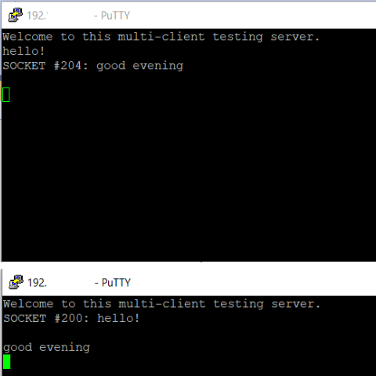
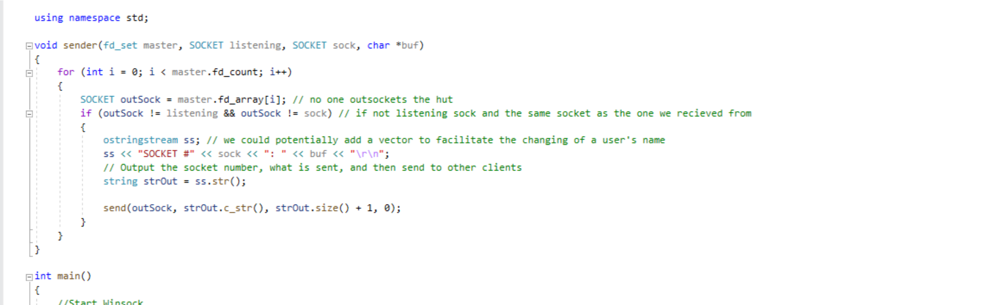

Made in C++ & C#
This is an ongoing project which allows for multiple clients to send messages to a C++ server via PuTTY. Instead of making use of threading, I use the select function provided by winsock to emulate the behavior of multithreading, ultimately reducing complexity and load.
It allows multiple clients to connect using the fd_set structure, the select() function and three macros: FD_CLR, FD_SET and FD_ZERO. I have personally tested it with over 16 simultaneous client connections from different computers, and there was no noticeable delay in delivering messages to all clients.
One of the issues I encountered for this project was to have a way to send the message to all connected clients, but not echo the message back to the sending client. This was solvable by putting all connected clients into an iteratable fd list, then using a for loop to exclude the sending of the message to the sending and listening port- a rather simple implementation, but one that works very well.
I plan on creating a GUI in C# later for this program which emulates the look and feel of AOL Instant Messenger, as well as the capability to assign custom usernames for each user.
This project is available for viewing from my BitBucker repository under SideProjects.